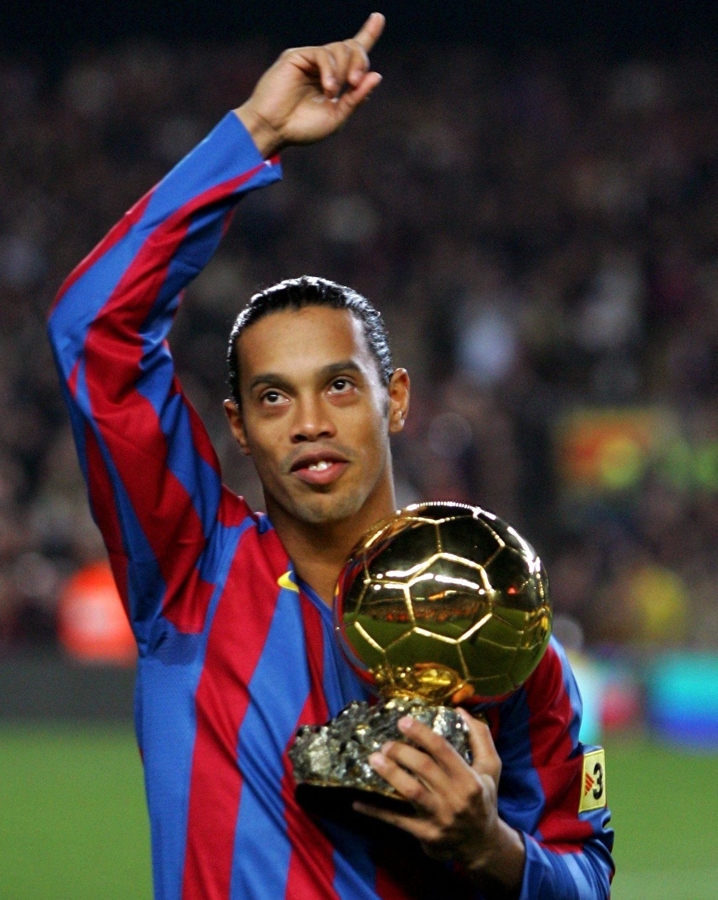
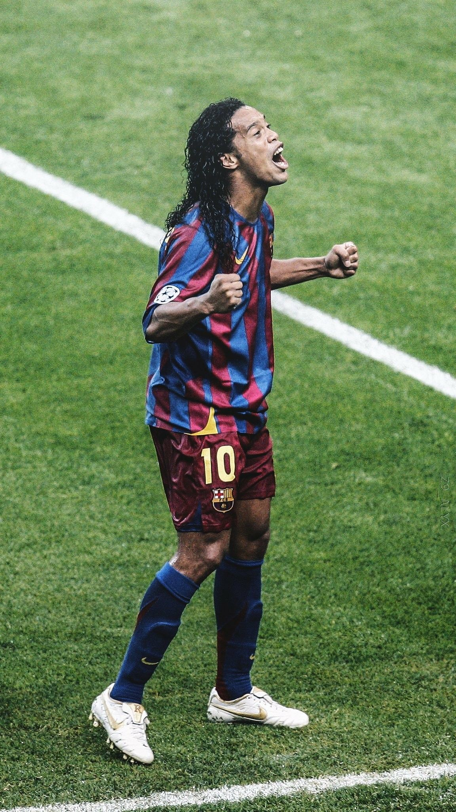
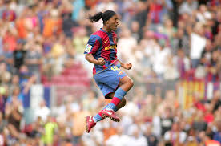
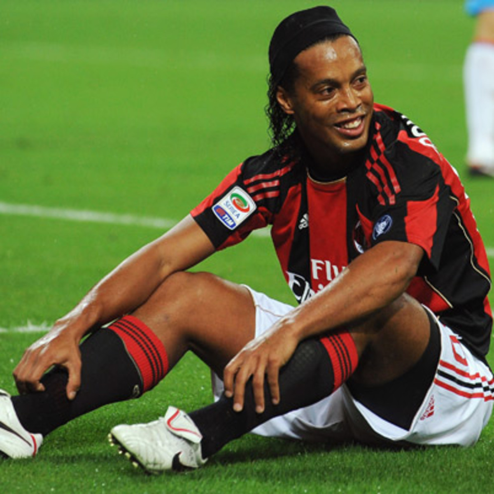
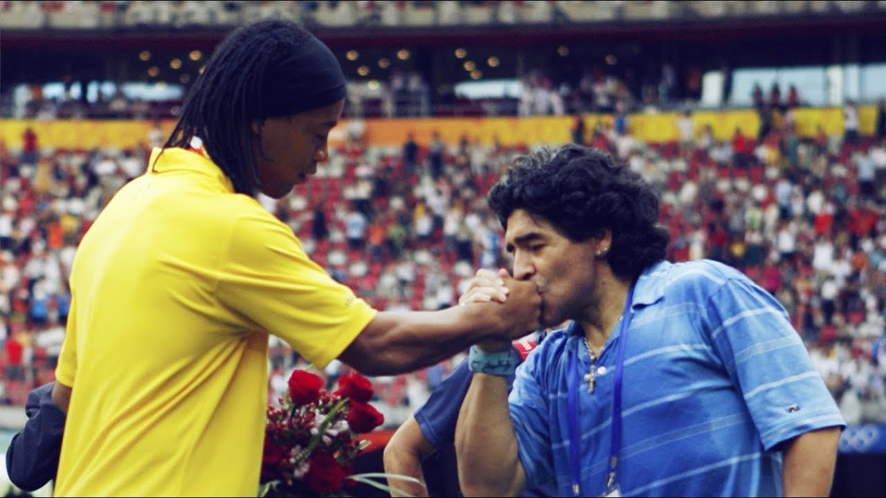
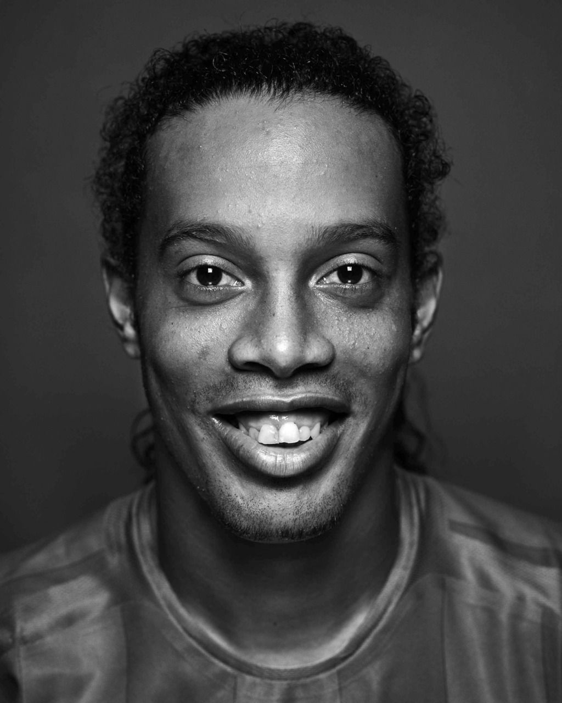
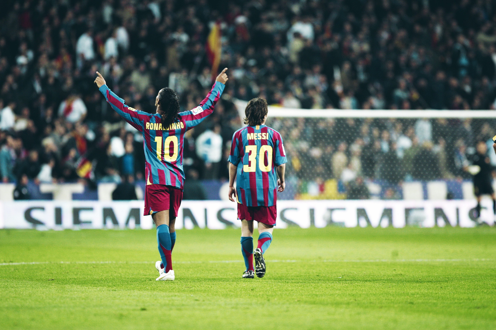
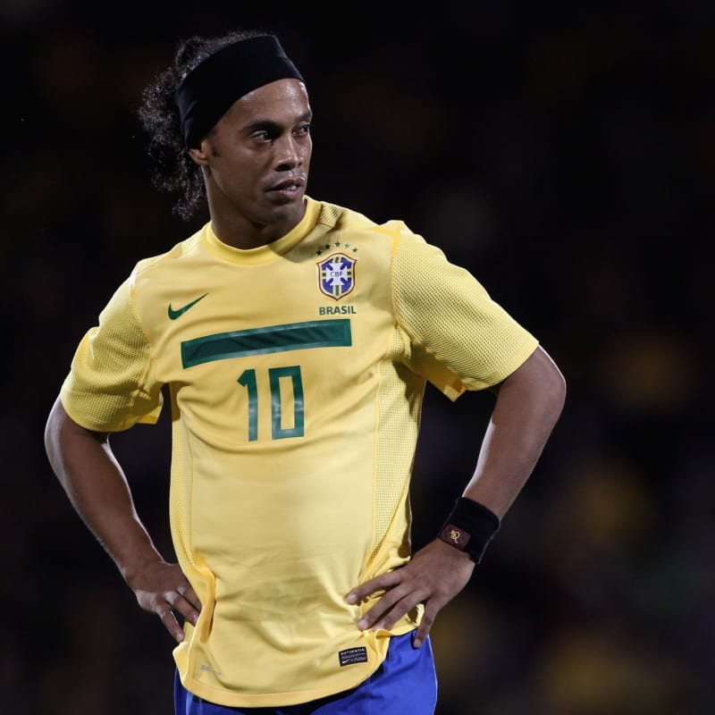
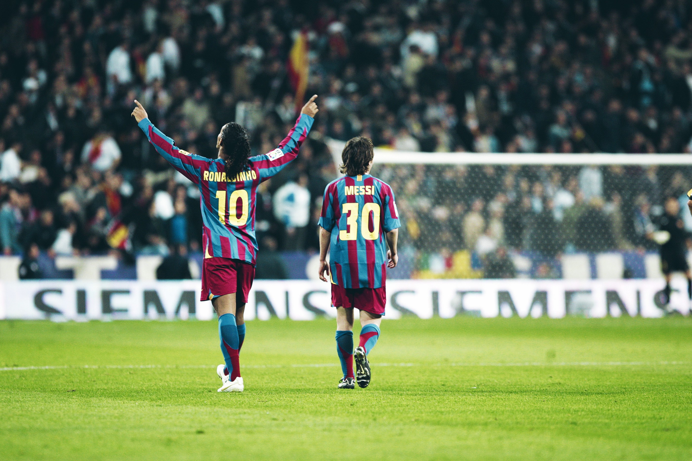
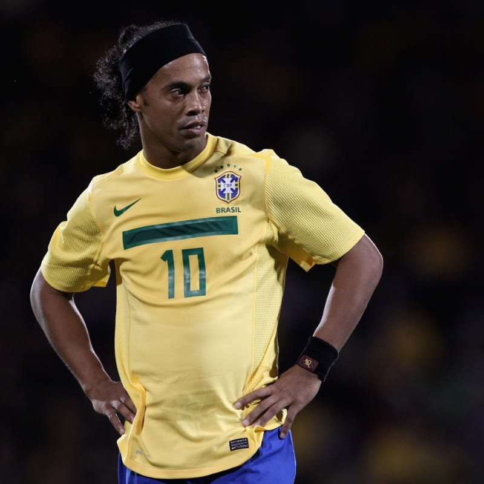

Ronaldinho






.jpg) 




One of the greatest footbaler ever.
- Ronaldo de Assis Moreira born 21 March 1980
- At age 20, he moved to Paris Saint-Germain in France before signing for Barcelona in 2003.
- he won his first FIFA World Player of the Year award as Barcelona won the 2004–05 La Liga title.
- After scoring two spectacular solo goals in the first 2005–06 El Clásico, Ronaldinho became the second Barcelona player, after Diego Maradona in 1983, to receive a standing ovation from Real Madrid fans at the Santiago Bernabéu.
- In 2004, he was named by Pelé in the FIFA 100 list of the world's greatest living players.
- In his international career with Brazil, Ronaldinho earned 97 caps and scored 33 goals and represented his country in two FIFA World Cups.
- He also captained the Brazil Olympic team to a bronze medal in men's football at the 2008 Summer Olympics.
- On 16 January 2018, Ronaldinho confirmed his retirement from football through his brother/agent: "He has stopped, it is ended.